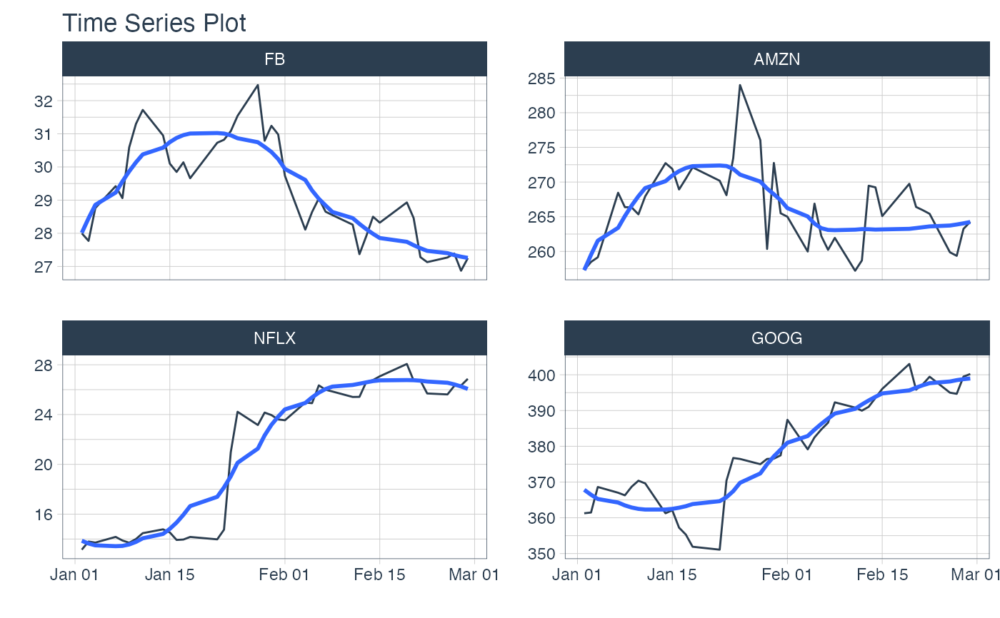

The easiest way to filter time-based tibbles using shorthand timeseries notation.
See between_time() for the date and date-time vector implementation.
filter_by_time(.data, .date_var, .start_date = "start", .end_date = "end")
| .data | A tibble with a time-based column. |
|---|---|
| .date_var | A column containing date or date-time values to filter |
| .start_date | The starting date for the filter sequence |
| .end_date | The ending date for the filter sequence |
Pure Time Series Filtering Flexibilty
The .start_date and .end_date parameters are designed with flexibility in mind.
Each side of the time_formula is specified as the character
'YYYY-MM-DD HH:MM:SS', but powerful shorthand is available.
Some examples are:
Year: .start_date = '2013', .end_date = '2015'
Month: .start_date = '2013-01', .end_date = '2016-06'
Day: .start_date = '2013-01-05', .end_date = '2016-06-04'
Second: .start_date = '2013-01-05 10:22:15', .end_date = '2018-06-03 12:14:22'
Variations: .start_date = '2013', .end_date = '2016-06'
Key Words: "start" and "end"
Use the keywords "start" and "end" as shorthand, instead of specifying the actual start and end values. Here are some examples:
Start of the series to end of 2015: .start_date = 'start', .end_date = '2015'
Start of 2014 to end of series: .start_date = '2014', .end_date = 'end'
Internal Calculations
All shorthand dates are expanded:
The .start_date is expanded to be the first date in that period
The .end_date side is expanded to be the last date in that period
This means that the following examples are equivalent (assuming your index is a POSIXct):
.start_date = '2015' is equivalent to .start_date = '2015-01-01 + 00:00:00'
.end_date = '2016' is equivalent to 2016-12-31 + 23:59:59'
This function is based on the tibbletime::filter_time() function developed by Davis Vaughan.
Other Time-Based dplyr functions:
summarise_by_time() - Easily summarise using a date column.
filter_by_time() - Quickly filter using date ranges.
between_time() - Range detection for date or date-time sequences.
library(tidyverse) library(tidyquant) library(timetk) # Filter values in January 1st through end of February, 2013 FANG %>% group_by(symbol) %>% filter_by_time(date, "start", "2013-02") %>% plot_time_series(date, adjusted, .facet_ncol = 2, .interactive = FALSE)